HIST 270 · History of China · Chapter 1 · Lecture 1
The Shang Sacred State
Kings Who Spoke with Their Ancestors, and the Tombs That Prove It
ca. 1500–1045 BCE · The land · The spirits · The tomb · The workers Background essay ↗
AI-generated title collage, not a historical source. Carried over from the SU26 deck.
The puzzle · Old bones, older writing
Bones Sold as Medicine Turned Out to Hold China's Oldest Writing
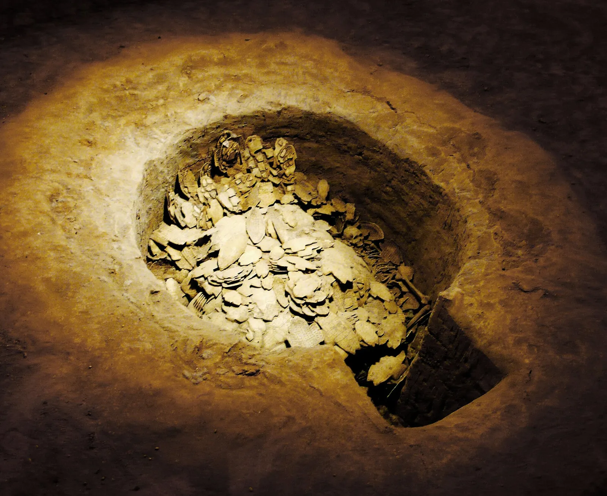
Pit YH127 at Anyang, excavated in 1936, held about 17,000 pieces of inscribed turtle shell. Photo: Chez Cåsver (Xuan Che), CC BY 2.0, Wikimedia Commons.
Dragon bones. Chinese druggists ground old bones into medicine.
Carved signs. Around 1899, scholars noticed writing on some of them.
The source. Farmers near Anyang had been digging them up.
The surprise. The writing named kings of the Shang dynasty.
The puzzle: how did Shang kings hold power, and how do these bones help us know?
A Rubbing Makes Faint Carving Easy to Read, and These Five Tools Make Every Slide Easy to Use
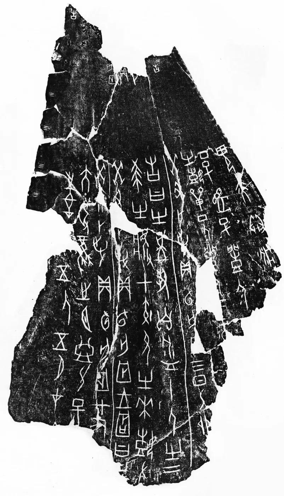
Ink rubbing of a large inscribed Shang ox scapula, National Museum of China. Public domain, Wikimedia Commons.
Press S to open the Study Buddy notes for each slide.
Click any image, or press Enter on it, to see it full size.
Click a teal dotted word for a quick definition.
Answer each Reading Guide checkpoint, then open the guide.
Use the arrow keys to move, and Esc for a slide map.
×
Rubbing
A rubbing is a copy made by laying damp paper over a carved surface and dabbing it with ink. The flat surface turns black and the carved lines stay white, so faint writing becomes easy to read.
Scholars have published rubbings of about 48,000 oracle bone fragments.
Popups like this one close with Esc, the × mark, or a click outside the card.
Roadmap · Four acts, one question
Four Acts Answer One Question: What Made Shang Kingship So Powerful?
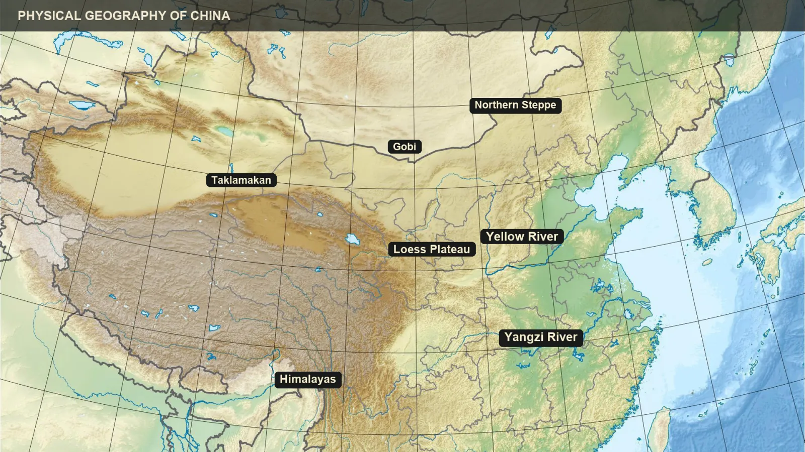
I
The Land and the First Kings
Two rivers, mountain barriers, and war kings at Anyang.
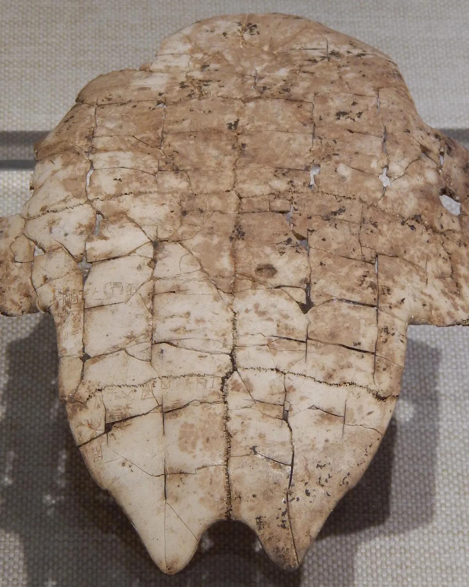
II
The King Who Spoke to the Dead
Oracle bones, ancestors, and the king as high priest.
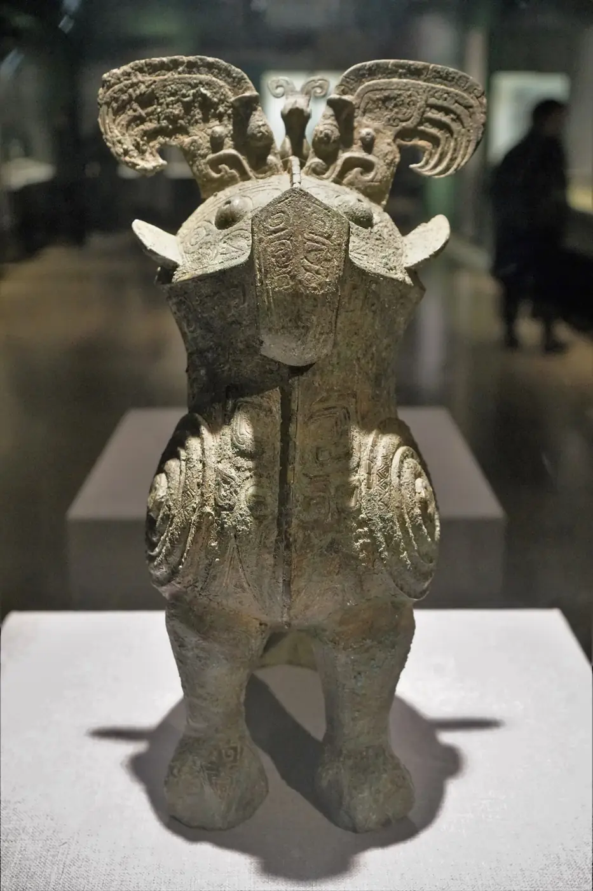
III
The Tomb That Was Never Robbed
Lady Hao’s treasure, her armies, and human sacrifice.
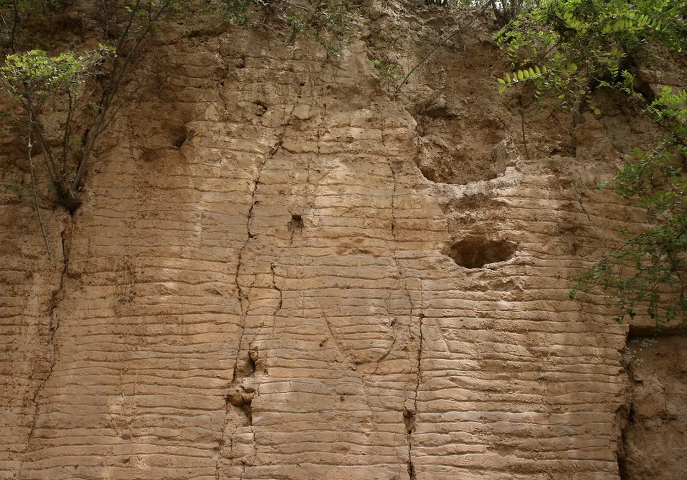
IV
Building the State by Force
Walls and tombs raised by forced labor.
The thread: religion, war and forced labor held each other up.
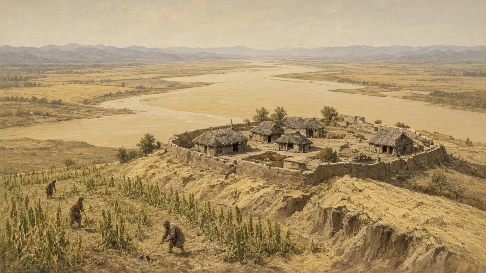
Act I · ca. 8000–1200 BCE
The Land and the First Kings
Soft yellow soil, a dangerous river, and barriers all around.
AI-generated illustration, not a historical source. The Yellow River winding past loess hills and millet fields on the North China Plain, about 1300 BCE, with a small walled village.
Q1 story · The land
China's First Kingdoms Grew Up in the Dry North, Along the Yellow River
Physical geography of China. Base map: Uwe Dedering, CC BY-SA 3.0, Wikimedia Commons; labels added for this course.
North. Dry plains of soft, fertile loess grew millet and wheat.
Yellow River. Its silt raised the riverbed, so floods were deadly.
South. The warm, wet Yangzi valley suited rice and boats.
Barriers. Mountains, deserts and grasslands separated China from other early civilizations.
Loess is fine, yellowish soil blown in by the wind over thousands of years. It covers much of north China, is very fertile, and is soft enough to farm with simple tools.
It also washes into the Yellow River and gives the river its color and its name.
Setting · Before the kings
Farming Villages Came First; Kings and Walled Towns Came Thousands of Years Later
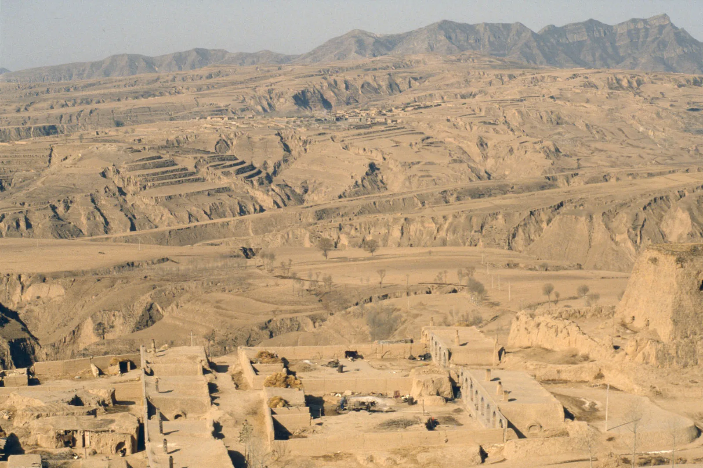
Loess hills in north China today. Photo: Till Niermann, CC BY-SA 3.0, Wikimedia Commons.
8000Millet farming begins in the north; your textbook says 10,000 (all BCE).
4000Distinct regional cultures appear.
2500Some settlements build walls; burials show rich and poor.
2000Bronze Age civilization begins soon after this date.
1500The Shang dynasty rises, about this time.
Sources: Ebrey, Ch. 1, p. 10; the 8000 BCE millet date is from Lu et al., PNAS 2009 (outside the textbook).
The Shang Kings Ruled Their Last 150 Years from a Great City at Anyang
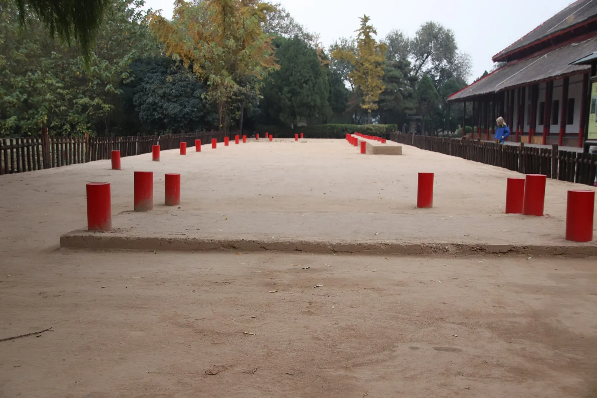
The palace and temple area at Yinxu (the “Ruins of Yin”), Anyang. Red posts mark where wooden pillars once stood. Photo: Gary Todd, CC0, Wikimedia Commons.
Five capitals. Tradition says the Shang kings ruled from five cities in turn.
Anyang. The last capital, called Yin, from about 1200 to 1045 BCE.
Palaces. Halls, temples and altars stood on rammed-earth platforms.
Dug up. Archaeologists first excavated Anyang between 1928 and 1937.
×
Rammed earth
Rammed earth (hangtu) is soil poured into wooden frames and pounded, layer by layer, until it is almost as hard as concrete.
The Shang used it for palace platforms, city walls and tomb fill. It needed little material but huge amounts of labor.
Setting · Kings at war
Shang Kings Were War Chiefs Who Fought, Hunted and Took Captives
Armies. Kings regularly sent 3,000 to 5,000 men on campaigns.
Hunts. Between wars, royal hunts could last for months.
Shifting map. Vassals turned into enemies; enemies became allies.
Captives. Prisoners could be enslaved or sacrificed, a key source of royal wealth.
Chariots. Horse-drawn chariots came into use around 1200 BCE.
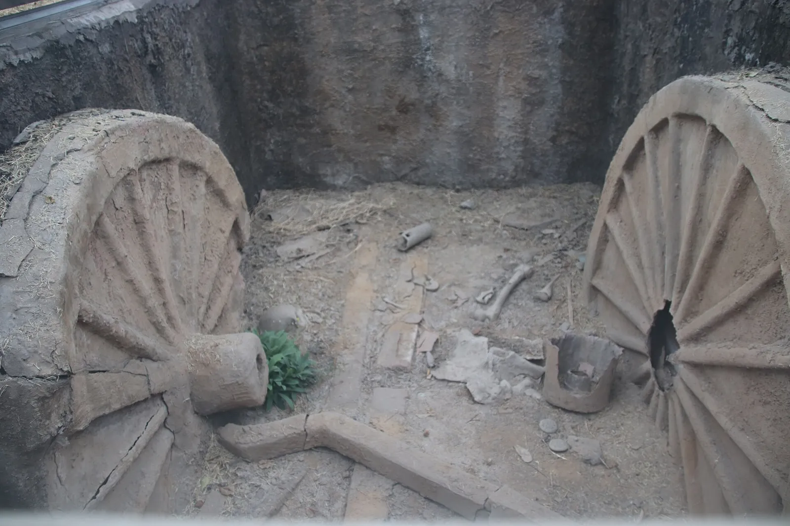
A chariot and its horses buried at Yinxu, Anyang. The wooden parts rotted, leaving their shapes in the earth. Photo: Gary Todd, CC0, Wikimedia Commons.
Reading Guide · Review Question 1
Reading Guide · Review Question 1
Review Question 1
How did the diverse geography of early China influence its agricultural development and its relationship with outside cultures?
Armies made a Shang king strong. His ancestors made him king.
AI-generated interpretation, not a historical source. A bronze cauldron and an oracle bone in a dim hall.
Q2 story · The spirit world
The Shang Believed Gods and Dead Ancestors Controlled Rain, War and Health
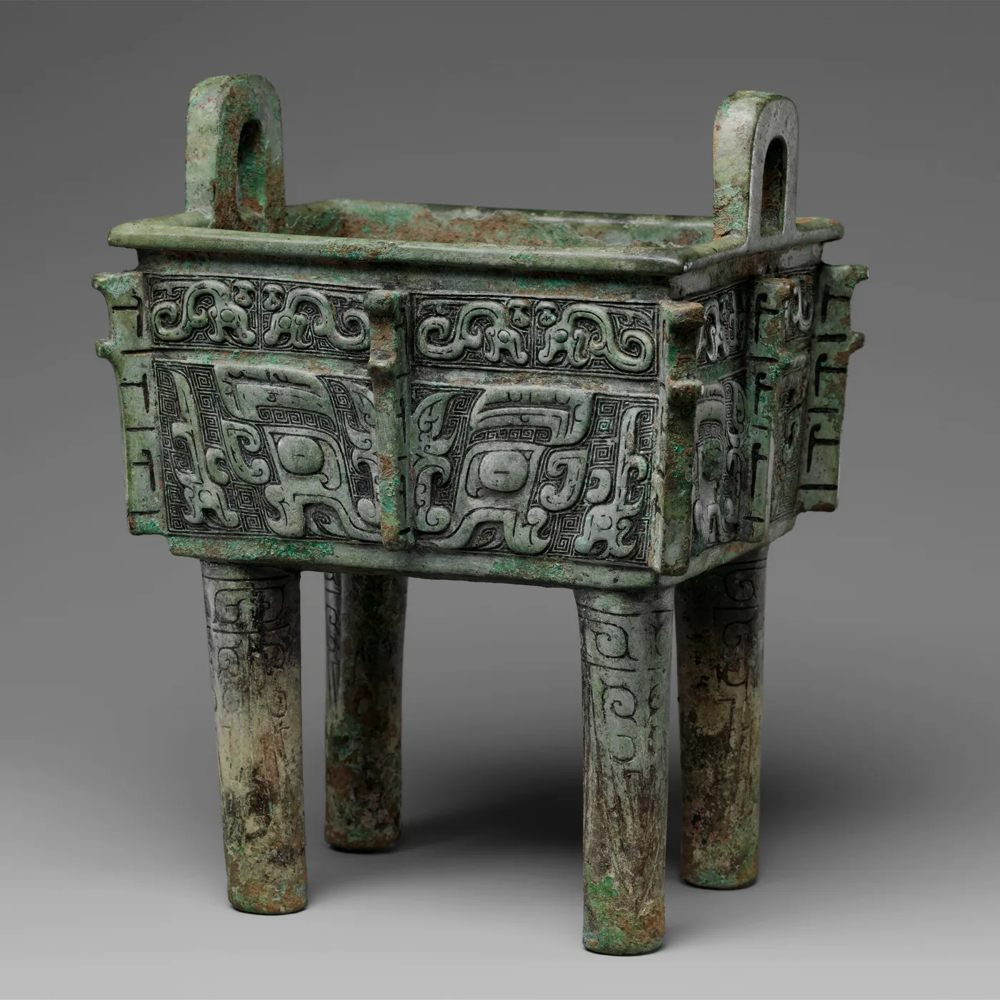
Rectangular cauldron (fangding) with animal-face masks, Shang dynasty, 12th–11th century BCE. The Metropolitan Museum of Art. Public domain, metmuseum.org.
Di. The high god commanded rain, thunder and wind.
Nature spirits. The sun, moon, Yellow River, winds and mountains received offerings.
Ancestors. Dead kings could curse, send dreams and help in battle.
The link. Royal ancestors could plead with the distant Di for the living.
×
Di (帝)
Di was the highest god the Shang worshipped. Di could command rain, thunder and wind, the forces that decided whether crops grew.
Di was remote. The royal ancestors, who were closer to the living king, could ask Di for help on his behalf.
Q2 story · Reading the cracks
To Question the Ancestors, Diviners Heated Bones Until They Cracked
Inscribed turtle plastron (under-shell) from Anyang, about 1200 BCE. Ningxia Museum. Photo: BabelStone, CC BY-SA 3.0, Wikimedia Commons.
Prepare a cattle shoulder blade or a turtle under-shell.
State the question aloud to the ancestors or to Di.
Apply heat until the bone cracks with a sharp pop.
The king reads the cracks as the spirits’ answer.
Carve the question, and sometimes the outcome, into the bone.
Watch · Oracle bones in two minutes
See How Diviners Turned Cracked Bones into Answers
Watch for
What the bones and shells were
How heat made the cracks
Why answers were carved on the bone
Video: “Oracle Bones,” Seek Learning, about 2 minutes.
Q2 story · King Wu Ding’s questions · ca. 1200 BCE
King Wu Ding Asked His Ancestors About Rain, War, Dreams and Even a Toothache
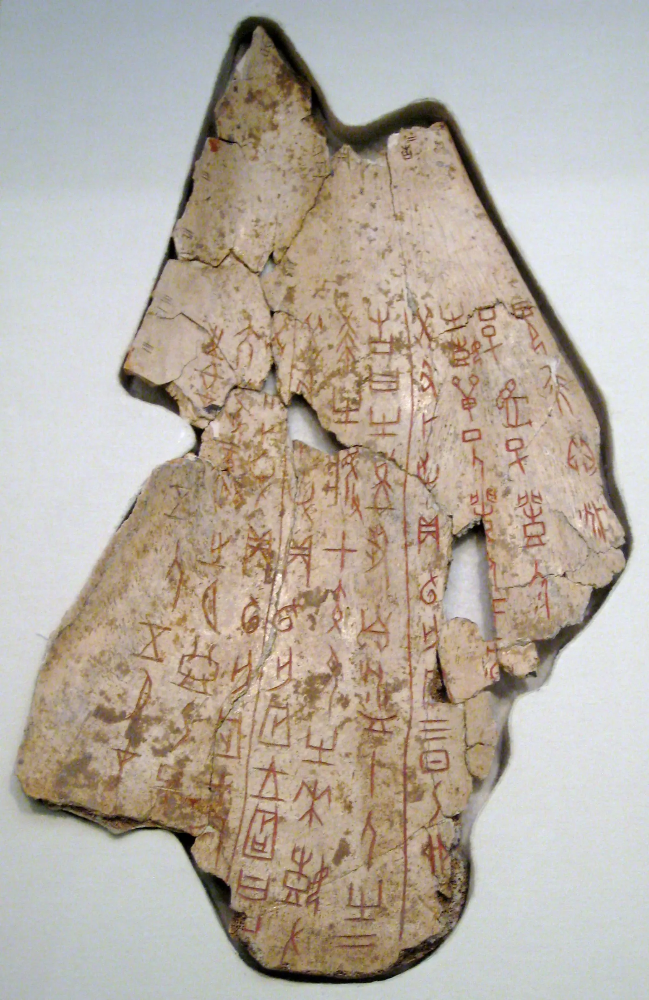
Ox scapula recording divinations by the diviner Zheng in the reign of King Wu Ding, about 1200 BCE. Photo: BabelStone, CC BY-SA 3.0, Wikimedia Commons.
Weather. Will it rain? Will the harvest be good?
War. Should the king attack this enemy? Will tribute arrive?
Family. Will Lady Hao give birth safely?
Body. What does the king’s dream mean? Why does his tooth ache?
Lady Hao’s childbearing will be good. … (After) thirty-one days … she gave birth; it was not good; it was a girl.
Oracle bone from Wu Ding’s reign, shortened. Trans. David N. Keightley, via Columbia University, Asia for Educators. Outside the textbook.
Q2 story · Feeding the ancestors
The King Fed His Ancestors with Wine, Grain, Animals and Human Victims
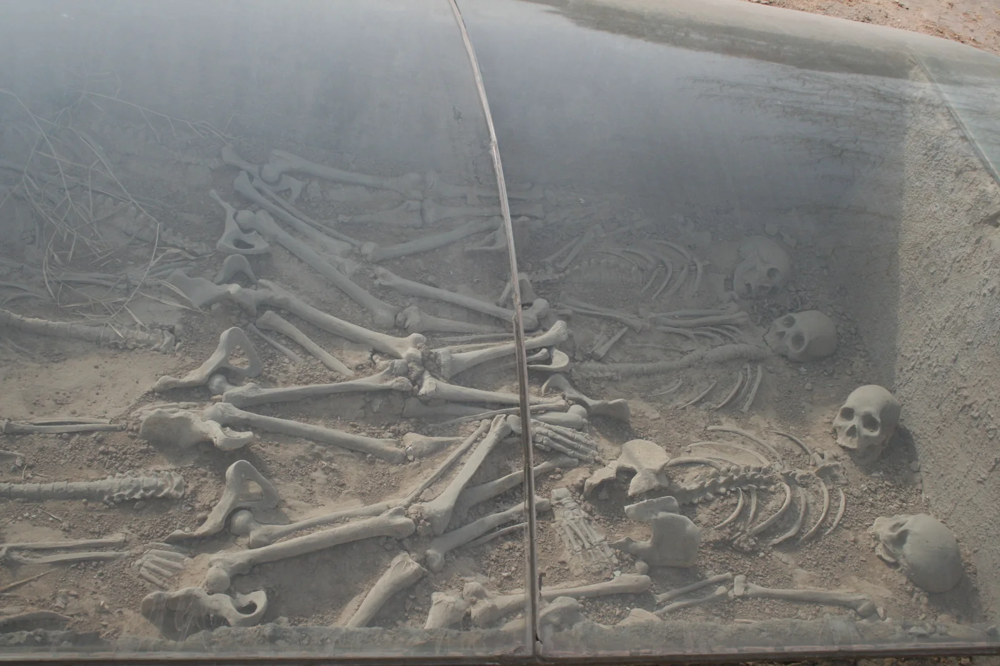
Human victims in a Shang sacrificial pit, preserved at the Yinxu site, Anyang. Photo: Gary Todd, CC0, Wikimedia Commons.
Offerings. Millet, wine, cattle, sheep and grain went to the ancestors.
Human victims. Captives were offered to the royal ancestors too.
Bronze. Great vessels held the food and wine at sacrificial ceremonies.
Rank. Nobles owned ritual bronzes, but kings owned many more.
Q2 story · The king as high priest
The King Was Also the High Priest, the Person Best Qualified to Reach the Spirits
High priest. Oracle bones show the king leading sacrifices to ancestors and Di.
His ancestors. The royal ancestors were the most powerful spirits of all.
Final word. The king himself often read the cracks and announced the meaning.
Records. Carved bones preserved royal questions, answers and results.
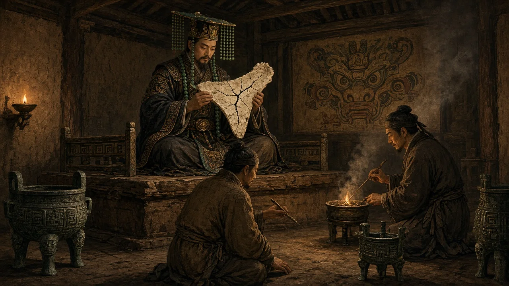
AI-generated illustration, not a historical source. A Shang king reads the cracks while a diviner heats the bone and a scribe waits to carve the record.
Q2 concept · Legitimacy
Concept: Legitimacy Is the Belief That a Ruler Has the Right to Rule
Concept
Legitimacy
People’s belief that a ruler has the right to rule, not just the power to force obedience. A ruler seen as legitimate needs less force to stay in charge.
Force alone. Armies can seize power, but force is costly and rivals can try it.
Shang answer. The king spoke for the royal ancestors, so his rule seemed right.
Keeping it. Legitimacy must be renewed, or a rival may claim it instead.
Zhou answer. The next dynasty would claim Heaven’s approval instead (Lecture 3).
Sources: Ebrey, Ch. 1, pp. 10 and 17; the general definition is a standard historians’ term.
Q2 story · Why religion meant power
Each Answered Prayer Made the King’s Right to Rule Look Stronger
Ask. The king consults the ancestors before acting.
→
Record. Scribes carve the question, and sometimes the result.
→
Proof. A good harvest or a victory shows his link works.
Excuses. Failures could be blamed on the wrong offering, not the king.
Result. No rival could claim to speak for the royal ancestors.
Each turn of the cycle renewed the king’s legitimacy.
What role did oracle bone divination, ancestor worship, and the Shang king’s religious authority play in establishing and maintaining Shang political power?
Reconstruction of Lady Hao’s tomb at Yinxu, grave goods in place. Photo: Gary Todd, CC0, via Wikimedia Commons.
Q3 story · What survived
Shang Palaces Rotted Away, but Their Royal Tombs Survived Underground
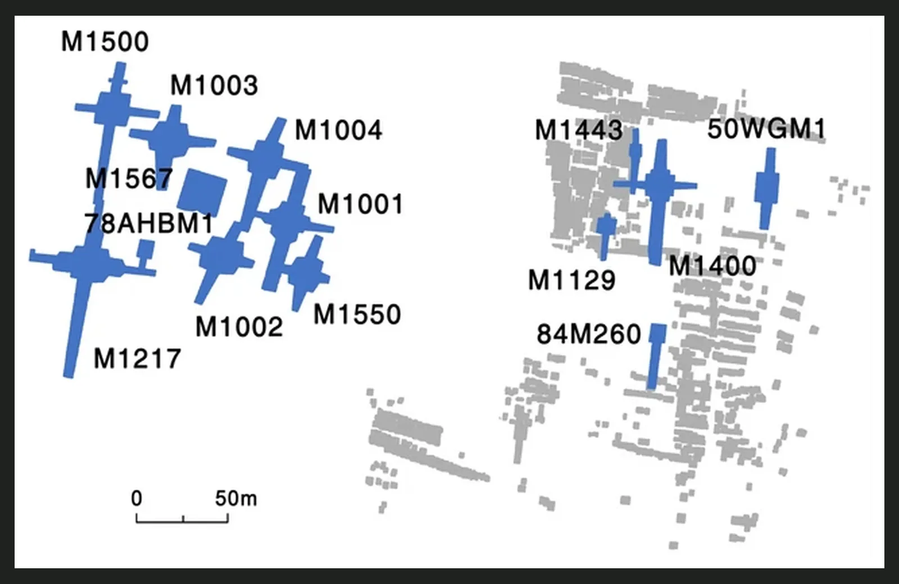
Plan of the royal cemetery at Xibeigang, Anyang. Blue: royal tombs with ramps. Grey: smaller burials and sacrificial pits. Jessica Rawson et al., 2020, CC BY 4.0, Wikimedia Commons.
Palaces. Wooden halls vanished; only earth platforms remain.
Tombs. Kings lay in huge cross-shaped pits with long ramps.
Cemetery. The royal graves sit across the river from the palaces.
Robbed. Almost every royal tomb was looted long ago.
Q3 story · Anyang, 1976
In 1976 Archaeologists Found the One Royal Tomb the Robbers Had Missed
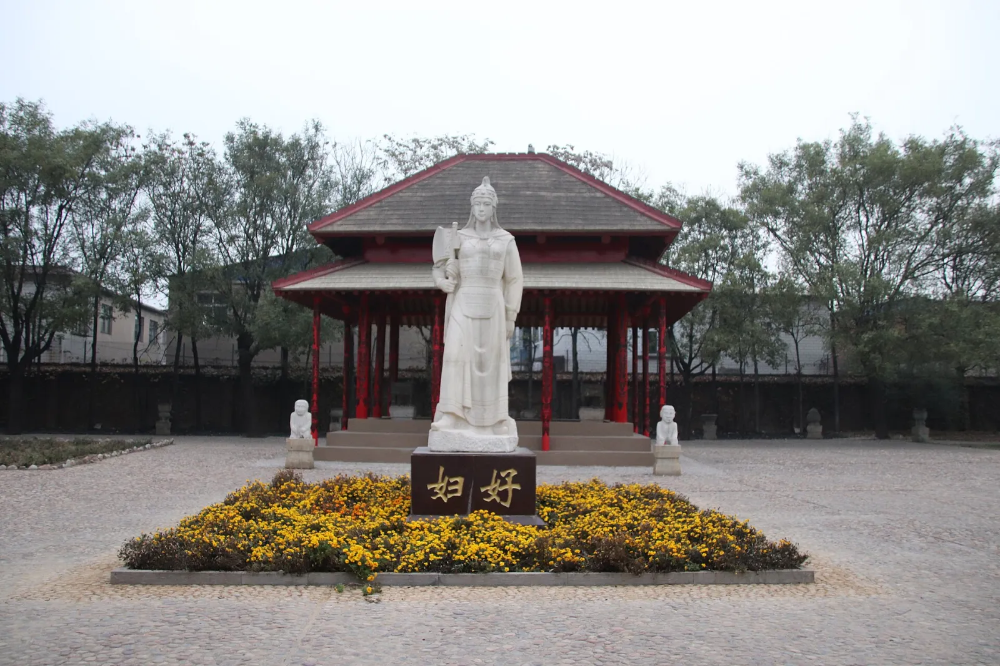
A modern statue of Lady Hao (Fu Hao) in front of the hall built over her tomb at Yinxu. Photo: Gary Todd, CC0, Wikimedia Commons.
Whose? Lady Hao, one of the many wives of King Wu Ding.
Size. About 13 by 18 feet at the top and 25 feet deep.
Location. One of the smaller royal tombs, outside the main cemetery.
Untouched. Everything still lay where the Shang had placed it.
Names: Lady Hao is also written Fu Hao (婦好).
Q3 story · The treasure
Lady Hao’s Tomb Held 1.6 Tons of Bronze and 755 Pieces of Jade
Owl-shaped wine vessel inscribed with Lady Hao’s name. Photo: Cangminzho, CC BY-SA 4.0, Wikimedia Commons.
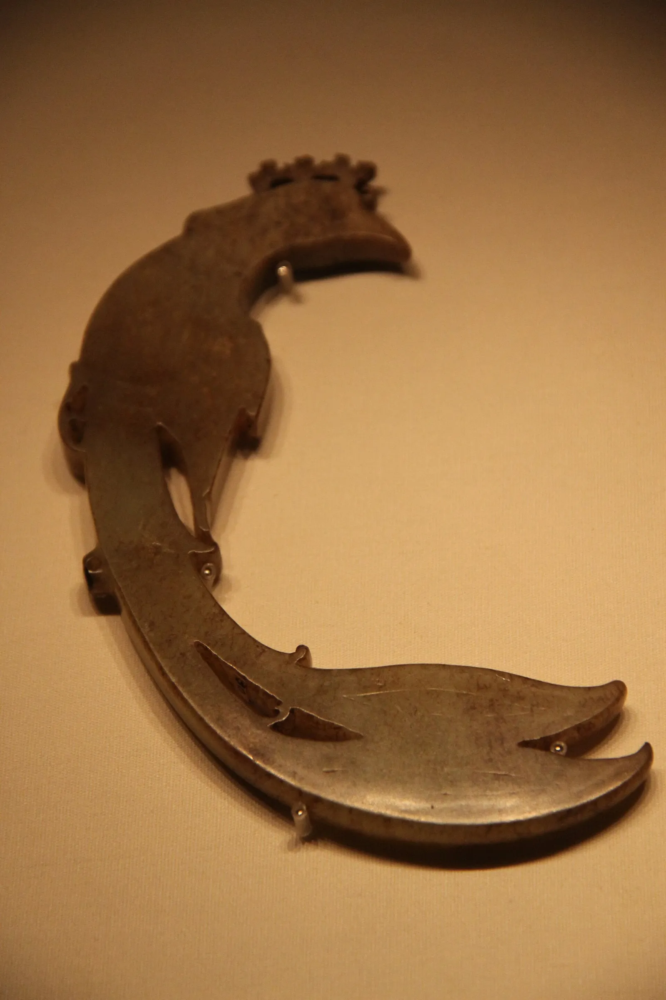
Jade phoenix from Lady Hao’s tomb. Photo: Gary Todd, CC0, Wikimedia Commons.
1.6 tons
of bronze objects; about 60 vessels carry her name.
755
jade objects, plus 63 of stone and 564 of bone.
Tribute
Bronzes from the south; knives and mirrors from the north.
Q3 story · A royal woman at war
Oracle Bones Show That Lady Hao Led Armies, Once with 13,000 Troops
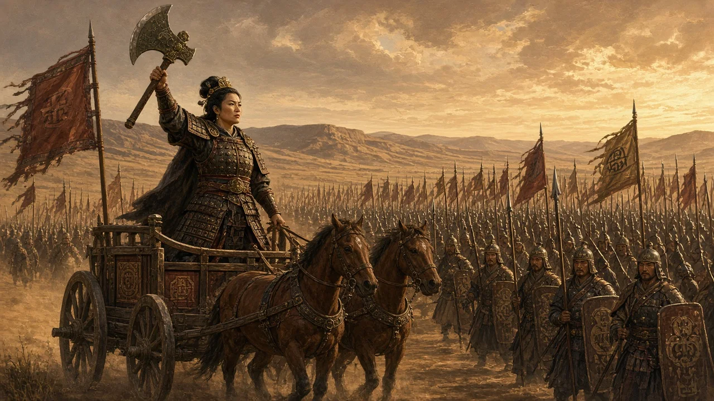
AI-generated illustration, not a historical source. Lady Hao leads her army. Armor, banners and chariot details are imagined.
Commander. Oracle bones show her leading campaigns, once 13,000 troops against the Qiang.
Weapons. 130 weapons; two great yue axes (outside the textbook).
Estate. She held her own tribute-paying lands (outside the textbook).
Ritual. She led sacrifices to the ancestors (outside the textbook).
Exceptional. A royal consort with real power, though few women matched her.
×
Qiang (羌)
The Qiang were peoples living west of the Shang, who probably spoke an early form of Tibetan.
The Shang fought them often, and oracle bones show that Qiang captives were often used as sacrificial victims.
Q3 story · Into the grave
Royal Tombs Held People Too: Some Followed Their Lord, Others Were Sacrificed
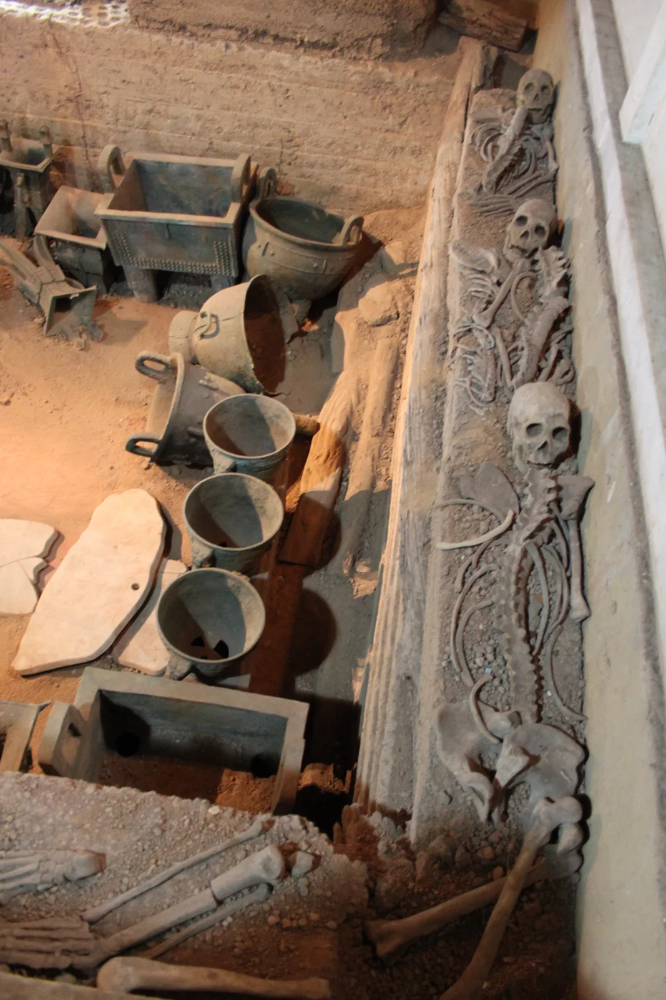
Reconstruction of the tomb of Fu Hao at Yinxu, Anyang, showing the positions of sacrificial victims (display replicas). Photo: Gary Todd, CC0, Wikimedia Commons.
Followers
Wives, retainers and servants who went with their lord.
Often buried with ornaments, coffins, even weapons.
Victims
Usually war captives not needed as slaves.
Often beheaded or cut in two at the waist.
Watch · Content advisory: human sacrifice
See What Archaeologists Found Buried with Lady Hao
Watch for
Who was buried with Lady Hao
How archaeologists read the remains
What the burial says about her rank
Video: “Human Sacrifice,” National Geographic, about 2½ minutes. Graphic subject. Watch on YouTube ↗
Q3 story · Ritual killing grew
Over Time, Shang Human Sacrifice Grew from a Few Victims to Hundreds
EarlyGraves rarely held more than three victims or followers.
RitesDivinations mention 300 to 400 captives killed in one ceremony.
1976About 1,200 victims found in 191 pits near the royal tombs.
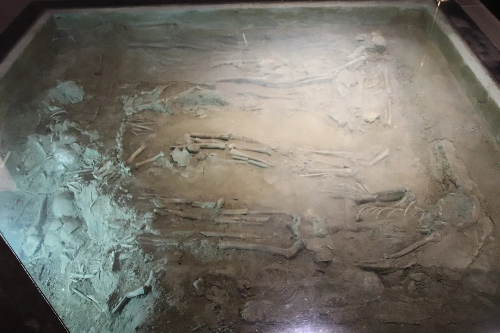
An excavated sacrificial pit preserved at the Yinxu site museum, Anyang. Photo: Gary Todd, CC0, Wikimedia Commons.
Q3 story · Everyone else
Below the Kings, Most Shang People Lived Much as Their Stone Age Ancestors Had
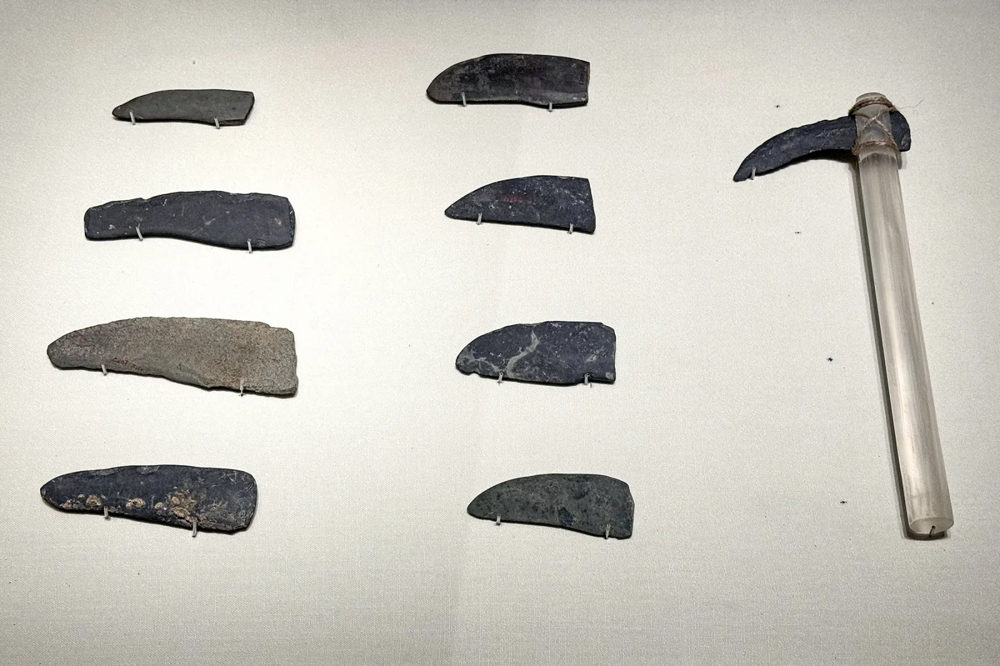
Stone sickles from the Shang city at Zhengzhou. Farmers harvested with tools like these. Photo: Windmemories, CC BY-SA 4.0, Wikimedia Commons.
Nobles. Large houses on raised rammed-earth platforms.
Craftsmen. City workshops made hairpins, arrowheads, bronzes and silk.
Commoners. Homes dug partly below ground to save heat.
Farmers. Small villages, millet fields, and stone tools.
The gap. The big change was the gulf between rulers and ruled.
Reading Guide · Review Question 3
Reading Guide · Review Question 3
Review Question 3
What do the royal tombs at Anyang, particularly the tomb of Lady Hao, reveal about social hierarchy, military leadership, wealth, and ritual sacrifice in Shang society?
Thousands of workers pounded the earth, layer by layer, for the king.
AI-generated illustration, not a historical source. Workers pound earth between wooden boards to raise a Shang city wall, about 1500 BCE, while an overseer with a bronze axe watches.
Q4 concept · Coercion
Concept: Coercion Means Making People Work Through Threats and Violence
Concept
Coercion
Forcing people to act through threats or violence rather than pay or persuasion. Your textbook names three kinds of workers the Shang could force: slaves, conscripts and serf-like farmers.
Slave. A person owned by another, often a captive taken in war.
Conscript. An ordinary farmer called up to work or fight when needed.
Serf. A farmer bound to a lord, owing him food and labor.
The debate. Scholars disagree who built Shang walls; all of them were coerced.
Sources: Ebrey, Ch. 1, p. 12 (Shang labor) and p. 18 (Zhou serfs).
Q4 story · Who did the digging?
Huge Work Gangs Built the Walls and Dug the Tombs, Backed by the Threat of Force
Projects. City walls, royal tombs, new fields and wars needed thousands of workers.
Workers. Slaves taken in war, or drafted serf-like farmers; scholars disagree.
Force. Either way, coercion backed by violence held the system up.
War too. The same state fielded armies of 3,000–5,000 men · recap: war-kings
Rammed-earth city wall at Xinzheng, built later (Eastern Zhou) with the same method; each stripe is one pounded layer. Photo: Gary Todd, CC0, Wikimedia Commons.
How did the Shang state mobilize labor for major construction projects and warfare, and what does this reveal about the relationship between rulers and ordinary people?
From Medicine Shops to Excavation Pits: How the Oracle Bones Were Found
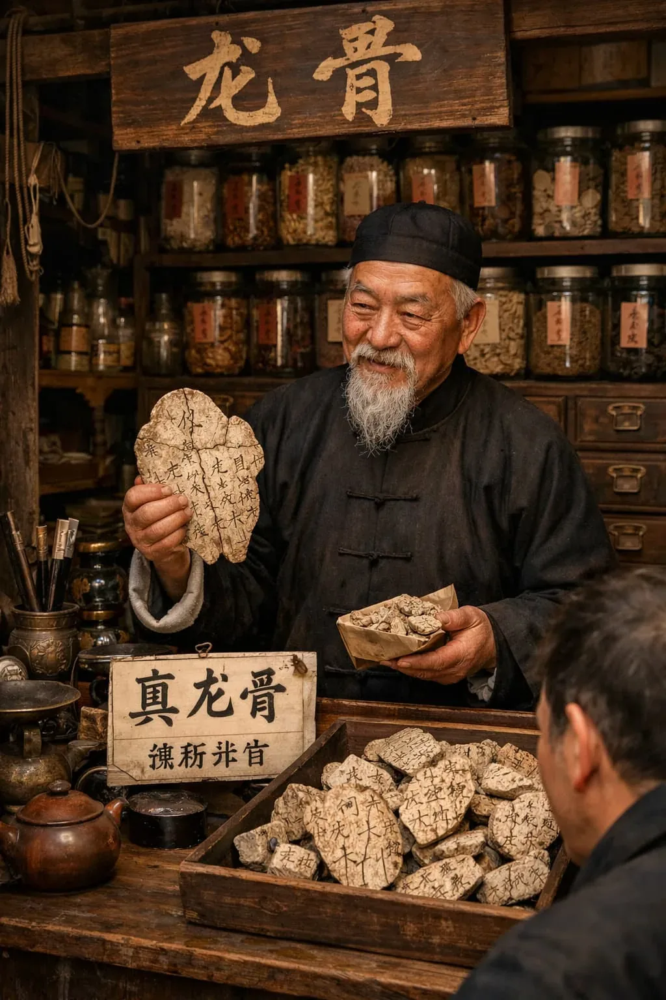
AI-generated interpretation, not a historical source. A medicine shop selling “dragon bones.” The signs use modern simplified characters, which did not exist in 1899.
1899Story: scholar Wang Yirong spots writing on “dragon bones.”
SecretDealers hid the source to keep prices high.
c. 1908Scholars trace the bones to villages near Anyang.
1928–37Excavations uncover the last Shang capital.
1936Pit YH127 holds about 17,000 pieces in one archive.
Wang Yirong was a Qing dynasty official and a collector of ancient inscriptions. A famous story says he noticed ancient writing on bones bought as medicine in 1899.
He began buying inscribed bones, but he died in 1900 during the Boxer Uprising. His friend Liu E carried on and published the first book of oracle bone rubbings in 1903.
The medicine-shop part of the story may be partly legend.
Independent study · Q4 story · The Zhengzhou wall
The Zhengzhou Wall Took Ten Thousand Men About Eight Years to Build
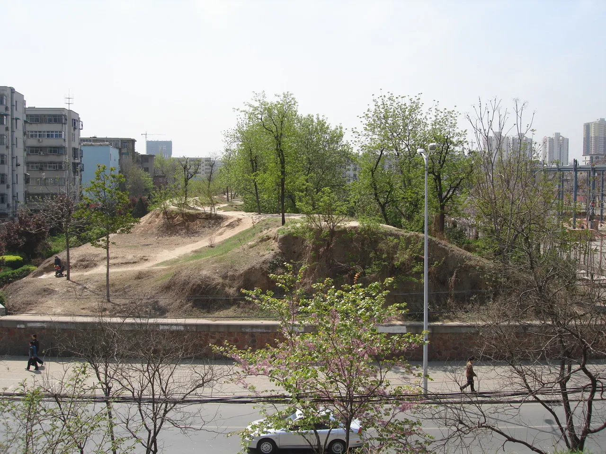
Surviving section of the Shang city wall at Zhengzhou, about 3,500 years old. Photo: Gary Todd, CC0, Wikimedia Commons.
SizeAbout 1,800 meters on each side of the city.
ShapeUp to 9 meters tall, 20 meters wide at the base.
EarthAbout 870,000 cubic meters, pounded layer by layer.
LaborAn estimated 10,000 men working about eight years.
Patricia Buckley Ebrey, A History of China, Chapter 1, “China in the Bronze Age: The Shang and Western Zhou Dynasties (ca. 1500–771 BCE),” pp. 8–19.
Primary sources (adapted)
Shang oracle bone inscriptions of the reign of Wu Ding, as translated in David N. Keightley, Sources of Shang History (University of California Press, 1978); the Lady Hao childbirth text as given in Columbia University, Asia for Educators, “Oracle-Bone Inscriptions of the Late Shang Dynasty: On Childbearing.” Shortened for this deck.
“Human Sacrifice,” National Geographic, YouTube (about 2½ minutes), slide AO.
Further reading
David N. Keightley, The Ancestral Landscape (Institute of East Asian Studies, Berkeley, 2000).
K. C. Chang, Art, Myth, and Ritual (Harvard University Press, 1983).
Li Feng, Early China: A Social and Cultural History (Cambridge University Press, 2013).
Roderick Campbell, Violence, Kinship and the Early Chinese State (Cambridge University Press, 2018).
Farming date (slide E, shown beside the textbook’s 10,000 BCE): Houyuan Lu et al., “Earliest Domestication of Common Millet (Panicum miliaceum) in East Asia Extended to 10,000 Years Ago,” PNAS 106 (2009): 7367–72.
The full scholarly bibliography is in the background essay.
Images
Real images: The Metropolitan Museum of Art; National Museum of China; Jessica Rawson et al. (CC BY 4.0); photos by BabelStone, Gary Lee Todd (including the Yinxu sacrificial pit on slide L and the Fu Hao tomb reconstruction on slide T, CC0), Till Niermann, Furius, Mlogic, Cangminzho, Windmemories, Xuan Che and Uwe Dedering; maps by Giorgi Balakhadze. Full credits sit in each caption.
Seven images are AI-generated: the title collage from the SU26 deck; the Act II divider and the dragon-bones shop from an earlier version of this lecture; the king reading an oracle bone (slide M), Lady Hao leading her army (slide S), and the Act I and Act IV dividers (slides AG and AL, 2026). They are interpretations, not historical sources.
Houmuwu ding weight (slide Z): National Museum of China, 832.84 kg; the textbook gives 875 kg.